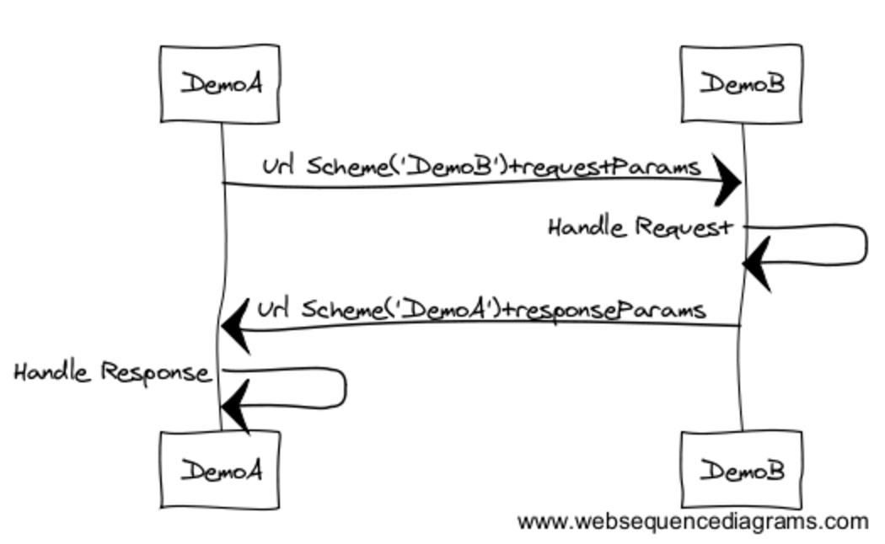
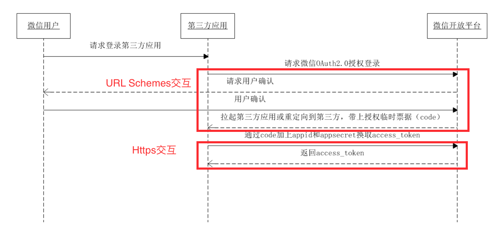

AppLink

WebView In Mobile App
- Android：最全面的 Webview 详解
- Android：你要的WebView与 JS 交互方式 都在这里了
- Android混合开发之WebView使用总结
- 还在用Android自带的WebView组件？太Out了！
- 关于Android APP集成腾讯X5 WebKit
- JsBridge
- UIWebView和WKWebView的使用及js交互
- WebViewJavascriptBridge
- 淘宝的Windvane、微信的小程序也算是Hybrid框架，在WebView基础上，提供组件定制化、规范化、性能优化、访问Native能力等


* [什么是软件架构](https://baike.baidu.com/item/%E8%BD%AF%E4%BB%B6%E6%9E%B6%E6%9E%84/7485920?fr=aladdin)
- 架构服务于效率、质量、体验、性能等
- 架构优化的短期成本和长期收益的权衡
- 架构要与当前业务发展和团队规模相匹配
- 架构设计的方法论和实践
解耦：模块化、组件化，
复用：基础组件，
分层：视图、业务、基础服务，
协议化等 - 滴滴插件化项目VirtualAPK开源
- 微信Android模块化架构重构实践
- Atlas-手淘组件化框架的前世今生和未来的路
- 架构的保持
- 代码之外：人的因素
网络相关
iOS存储
存储方式
- NSUserDefault，可以存放Key-Value对形式的轻量数据。
- NSKeyedArchiver，存储对象到二进制文件。
- writeToFile，将NSString、NSArray、NSDictionary、NSData对象存储到文件。
- CoreData.Framework，对象管理并支持对象持久。

- Sqlite，轻量数据库
- Keychain，钥匙串存储
- NSUbiquitousKeyValueStore，存储数据到iCloud
关于安全性
- 敏感数据不要明文存储
- 存放在Keychain，不越狱还是安全的
- Safety is relative, choose a safer way.
三方库
- AwesomeCache
- YYCache 基于Disk、Memory的缓存
- YTKKeyValueStore 基于Sqlite的健值对数据的存储
- SwiftyUserDefaults
- FMDB
- ObjectiveRecord CoreData的封装
- realm Realm is a mobile database: a replacement for Core Data & SQLite.
- Valet 基于Keychain的数据存储，接口简洁易用，支持同一开发者下应用间数据共享，支持iCloud数据同步，通过TouchID或设备密码保护数据。
- UICKeyChainStore
- KeychainAccess
- Keychain-Dumper Keychain is not safe.
参考
开发笔记4
开发笔记2
数据
看了下自己app的友盟统计，还有6%的iOS 8.x设备。等iOS 11出来后，再考虑放弃iOS 8.x用户吧。
OC稳住呀～
文章推荐（转）
最近看到Lottie项目，一个iOS，Android和React Native库，可以实时渲染After Effects动画，并且允许本地app像静态资源那样轻松地使用动画。回过头又把这篇图片格式调研的文章看了一遍，哈。这篇文章把移动开发常用的几种静态、动态图片做了详细的比较。
WKWebView不支持NSURLProtocol，导致基于UIWebView＋NSURLProtocol并做了一些深度优化的，很难一下子就迁移到WKWebView。WKWebView内部使用了NSURLProtocol，但没有对外开放，不知道出于什么考虑。这篇文章以比较hack的方式让WKWebView支持NSURLProtocol。
另一种Native动态化的方案，在OC编译器上动手脚，将OC代码自动编译成可动态下发的JS代码。
有些特性需要配合ios 10设备使用，比如内存循环引用、DYLD_PRINT_STATISTICS（打印应用预加载时间）等。
在Scheme的Environment Variables添加DYLD_PRINT_STATISTICS＝YES，可以打印应用预加载时间。从打印出来的日志看，dylib loading time占用了不少时间，应该是跟加载的系统库和三方库有关。
The loading of Apple system frameworks is highly optimized but loading your embedded frameworks can be expensive. 当三方库不采用Framework形式打包，加载时间是少了不少。
// 三方库以Frameworks形式打包
Total pre-main time: 392.25 milliseconds (100.0%)
dylib loading time: 336.73 milliseconds (85.8%)
rebase/binding time: 10.88 milliseconds (2.7%)
ObjC setup time: 15.91 milliseconds (4.0%)
initializer time: 28.65 milliseconds (7.3%)
slowest intializers :
libSystem.B.dylib : 4.63 milliseconds (1.1%)
AFNetworking : 12.03 milliseconds (3.0%)
// 三方库以.a静态链接库形式链接
Total pre-main time: 93.71 milliseconds (100.0%)
dylib loading time: 11.46 milliseconds (12.2%)
rebase/binding time: 27.05 milliseconds (28.8%)
ObjC setup time: 13.16 milliseconds (14.0%)
initializer time: 41.94 milliseconds (44.7%)
slowest intializers :
libSystem.B.dylib : 5.47 milliseconds (5.8%)
libBacktraceRecording.dylib : 4.48 milliseconds (4.7%)
Fanmei : 54.14 milliseconds (57.7%)
项目
After Effects动画的渲染引擎。
A library for converting Adobe AE shape based animations to a data format and playing it back on Android and iOS devices.
跟Lottie类似，也是After Effects动画的渲染引擎。
A data-driven UICollectionView framework for building fast and flexible lists.
An in-app debugging and exploration tool for iOS
iOS设备调试工具，可以查看沙盒，抓包，查看视图信息等。
仿android的meterial design风格的控件
开发笔记3
数据
主要是针对Crash和ANR的统计。
文章推荐
监控先于优化。没有数据支撑的优化，往往没有说服力，也很难衡量优化的效果如何。
大部分App或多或少都会涉及到存储（持久化或缓存）。ibireme/YYCache，支持在硬盘持久化和在内存中缓存，从功能、性能和接口易用性上都不错，目前项目中也在用，推荐。
老文章了，视图布局机制在iOS、Android、Html CSS是相通的，可以互相借鉴。youngsoft/MyLinearLayout实现很多布局机制。
MyLinearLayout is equivalent to: UIStackView of iOS and LinearLayout of Android.
MyRelativeLayout is equivalent to: AutoLayout of iOS and RelativeLayout of Android.
MyFrameLayout is equivalent to: FrameLayout of Android.
MyTableLayout is equivalent to: TableLayout of Android and table of HTML.
MyFlowLayout is equivalent to: flexbox of CSS3.
MyFloatLayout is equivalent to: float of CSS.
借鉴Android的LinearLayout以及Html CSS的FlexBox，自己写了FMLayouts，对iOS的布局机制做补充。
Android
项目
SnapKit/Masonry的Swift版本
iOS测试框架XCTest
- XCTest已基本满足单元测试和UI测试的需求，支持对同步流程、异步流程、性能的测试，UI测试代码的自动生成，代码测试覆盖率的统计等。
- UI测试也还有不足的地方，例如录制生成的代码仍不够完善，无法直接访问目标APP的接口，无法修改边界条件，在单设备或单模拟器运行效率过低，每次重启目标App后只能运行一个Case。
- 一些三方库
- Bluepill is a tool to run iOS tests in parallel using multiple simulators.
- XCTest官方手册
- iOS单元测试和UI测试
- 单元测试之旅--预见优秀
- iOS UnitTest单元测试
- Android单元测试的整理
开发笔记1
文章推荐
徐川大神对2016年移动技术发展的概述，以及对2017年的展望。总结了各种技术，热补丁、组件化、动态化、跨平台、直播、AR/VR等等。自己在项目实践中，也尝试了热补丁、动态化、组件化等技术，比较有体会。推荐他的博客移动开发前线，还是相当不错的。
对于往往存在大量异构元素的app首页或集合页，该方案的思路还是可以借鉴下的。
为满足大部分动态化需求，在App中内嵌一个WebView支持H5页，这是比较常见的做法。iOS上就UIWebView和WKWebView，WKWebView相比较UIWebView，性能更优，但也多了不少限制。目前自己项目中也是直接使用WKWebView，好在H5和Native的交互比较少，对WKWebView也没有做多少优化。
异步编程，特别是多层嵌套的情况，即使用了GCD&Block回调方式去写，代码仍会过于凌乱，可读性也大打折扣。我会通过以下两种方法去处理，将每个异步回调的处理逻辑封装在一个函数内，或将每个异步过程封装起来（即Future／Promise的做法）。无论哪种，也都会额外增加些成本，结合自己项目内的代码风格和使用成本再选择一个合适的。
知识点比较基础，罗列得比较多，可以结合项目多看看。
代码推荐
收集了大量的iOS开源项目、网页等等
Alamofire源码分析
概述
Alamofire跟AFNetworking的功能差不多，都是对URLSession的封装，对上层提供易用的网络请求接口。Alamofire和AFNetworking分别是Swift和OC的实现版本。目前，这两个网络封装库的关注度和使用率非常高，代码质量也相当不错。本文想通过对
Alamofire源码的简单分析，了解其基本框架和设计思路。源码链接：Alamofire
一个GET请求的源码分析
- 从最简单的Get请求入手，分析
Alamofire的代码。一个请求流程，可以分为请求发送流程和请求响应流程，下文将从这两个流程展开分析。
// Get请求的调用方式
Alamofire.request("https://httpbin.org/get").responseJSON { response in
print(response.request) // original URL request
print(response.response) // HTTP URL response
print(response.data) // server data
print(response.result) // result of response serialization
if let JSON = response.result.value {
print("JSON: \(JSON)")
}
}
请求发送流程
Alamofire.Swift可以认为Alamofire一些对外接口的包装（Facade API）。Alamofire.request实际上是调用了SessionManager.request。
// 调用request方法
/// Creates a `DataRequest` using the default `SessionManager` to retrieve the contents of a URL based on the specified `urlRequest`.
@discardableResult
public func request(_ urlRequest: URLRequestConvertible) -> DataRequest {
return SessionManager.default.request(urlRequest)
}
- 在
SessionManager.request，Request被组装创建，并加到发送队列中，然后等待一系列的响应事件。而SessionManager主要职责是管理发送队列，组装请求消息，设置Session相关的配置，设置工作线程等。
// 创建request对象，并开始发送
/// Creates a `DataRequest` to retrieve the contents of a URL based on the specified `urlRequest`.
open func request(_ urlRequest: URLRequestConvertible) -> DataRequest {
var originalRequest: URLRequest?
do {
originalRequest = try urlRequest.asURLRequest()
let originalTask = DataRequest.Requestable(urlRequest: originalRequest!)
let task = try originalTask.task(session: session, adapter: adapter, queue: queue)
let request = DataRequest(session: session, requestTask: .data(originalTask, task))
delegate[task] = request
if startRequestsImmediately { request.resume() }
return request
} catch {
return request(originalRequest, failedWith: error)
}
}
- 接着，通过
Request.responseJSON设置JSON响应回调的处理方法。
// 设置回调
/// Adds a handler to be called once the request has finished.
@discardableResult
public func responseJSON(
queue: DispatchQueue? = nil,
options: JSONSerialization.ReadingOptions = .allowFragments,
completionHandler: @escaping (DataResponse<Any>) -> Void)
-> Self
{
return response(
queue: queue,
responseSerializer: DataRequest.jsonResponseSerializer(options: options),
completionHandler: completionHandler
)
}
Request.responseJSON实际上是调用Request.response，将回调添加到Request.delegate.queue，然后等待响应事件。
/// Adds a handler to be called once the request has finished.
@discardableResult
public func response<T: DataResponseSerializerProtocol>(
queue: DispatchQueue? = nil,
responseSerializer: T,
completionHandler: @escaping (DataResponse<T.SerializedObject>) -> Void)
-> Self
{
delegate.queue.addOperation {
let result = responseSerializer.serializeResponse(
self.request,
self.response,
self.delegate.data,
self.delegate.error
)
var dataResponse = DataResponse<T.SerializedObject>(
request: self.request,
response: self.response,
data: self.delegate.data,
result: result,
timeline: self.timeline
)
dataResponse.add(self.delegate.metrics)
(queue ?? DispatchQueue.main).async { completionHandler(dataResponse) }
}
return self
}
- 至此，发送流程完成，接着就等待响应事件。
请求响应流程
一个请求的响应事件会有多个，并按循序上报，例如以下几个主要事件，
HTTPS鉴权事件
func urlSession(_ session: URLSession,task: URLSessionTask, didReceive challenge: URLAuthenticationChallenge, completionHandler: @escaping (URLSession.AuthChallengeDisposition, URLCredential?) -> Void)收到Response响应头事件
func urlSession(_ session: URLSession,dataTask: URLSessionDataTask, didReceive response: URLResponse, completionHandler: @escaping (URLSession.ResponseDisposition) -> Void)收到Response Body数据事件
func urlSession(_ session: URLSession, dataTask: URLSessionDataTask, didReceive data: Data)响应流程完成事件
func urlSession(_ session: URLSession, task: URLSessionTask, didCompleteWithError error: Error?)本文以最后一个响应流程完成事件为例，梳理下整个响应流程。
首先，
SessionDelegate会收到由URLSession.delegate上报的urlSession:task:didCompleteWithError，根据task找到URLSessionTask并通过其delegate上报事件给TaskDelegate。
/// Tells the delegate that the task finished transferring data.
open func urlSession(_ session: URLSession, task: URLSessionTask, didCompleteWithError error: Error?) {
/// Executed after it is determined that the request is not going to be retried
let completeTask: (URLSession, URLSessionTask, Error?) -> Void = { [weak self] session, task, error in
guard let strongSelf = self else { return }
if let taskDidComplete = strongSelf.taskDidComplete {
taskDidComplete(session, task, error)
} else if let delegate = strongSelf[task]?.delegate {
delegate.urlSession(session, task: task, didCompleteWithError: error)
}
NotificationCenter.default.post(
name: Notification.Name.Task.DidComplete,
object: strongSelf,
userInfo: [Notification.Key.Task: task]
)
strongSelf[task] = nil
}
guard let request = self[task], let sessionManager = sessionManager else {
completeTask(session, task, error)
return
}
// Run all validations on the request before checking if an error occurred
request.validations.forEach { $0() }
// Determine whether an error has occurred
var error: Error? = error
if let taskDelegate = self[task]?.delegate, taskDelegate.error != nil {
error = taskDelegate.error
}
/// If an error occurred and the retrier is set, asynchronously ask the retrier if the request
/// should be retried. Otherwise, complete the task by notifying the task delegate.
if let retrier = retrier, let error = error {
retrier.should(sessionManager, retry: request, with: error) { [weak self] shouldRetry, timeDelay in
guard shouldRetry else { completeTask(session, task, error) ; return }
DispatchQueue.utility.after(timeDelay) { [weak self] in
guard let strongSelf = self else { return }
let retrySucceeded = strongSelf.sessionManager?.retry(request) ?? false
if retrySucceeded, let task = request.task {
strongSelf[task] = request
return
} else {
completeTask(session, task, error)
}
}
}
} else {
completeTask(session, task, error)
}
}
- 接着，
TaskDelegate收到该事件后，恢复queue队列，按循序执行其中的回调，如ResponseJSON。
@objc(URLSession:task:didCompleteWithError:)
func urlSession(_ session: URLSession, task: URLSessionTask, didCompleteWithError error: Error?) {
if let taskDidCompleteWithError = taskDidCompleteWithError {
taskDidCompleteWithError(session, task, error)
} else {
if let error = error {
if self.error == nil { self.error = error }
if
let downloadDelegate = self as? DownloadTaskDelegate,
let resumeData = (error as NSError).userInfo[NSURLSessionDownloadTaskResumeData] as? Data
{
downloadDelegate.resumeData = resumeData
}
}
// queue队列中的operaion开始按循序执行，回调到上层。
queue.isSuspended = false
}
}
其他模块
除了发送，响应相关的代码，
Alamofire还有许多其他模块。例如，NetworkReachabilityManager管理网络状态。ParameterEncoding入参编解码方式。ResponseSerialization响应的反序列化方式。ServerTrustPolicyHTTPS的鉴权等等。
总结
- 分析得比较简单，抱砖引玉。


iOS学习导图
本文简单罗列了下iOS相关的点。
基础

- Runloop
- 多线程&同步
- Core Animation
Core Animation编程指南
iOS-Core-Animation-Advanced-Techniques
- Block
- GCD
- Core Foundation
应用优化

移动三方应用分享
iOS原生分享控件
NSString *textToShare = @"要分享的文本内容";
UIImage *imageToShare = [UIImage imageNamed:@"shop"];
NSURL *urlToShare = [NSURL URLWithString:@"http://blog.csdn.net/hitwhylz"];
NSArray *activityItems = @[textToShare, imageToShare, urlToShare];
UIActivityViewController *vc = [[UIActivityViewController alloc]initWithActivityItems:activityItems applicationActivities:nil];
[self presentViewController:vc animated:YES completion:nil];
三方开放平台
- 新浪微博 http://open.weibo.com
- 腾讯微博 http://dev.t.qq.com
- QQ空间，朋友网 http://connect.qq.com/intro/login/
- QQ分享（QQ好友，QQ群等）http://mobile.qq.com/api/
- 豆瓣社区 http://developers.douban.com
- 人人网 http://dev.renren.com
- 微信好友 微信朋友圈 http://open.weixin.qq.com
- 友盟U-Share
- 用过友盟Share，但是遇到友盟ShareSDK中使用的微信SDK版本与官方不同步的问题，后来放弃了友盟ShareSDK，全部采用原生官方SDK，如微信（好友、朋友圈）、QQ、微博，在国内，这三个分享渠道已经能覆盖80%了。
URL Schemes
- iOS应用间可以通过
URL Schemes解决相互通信的问题。 - DemoA通过
openURL唤起DemoB，并带上参数。
DemoA
[[UIApplication sharedApplication] openURL:[NSURL URLWithString:@"demob://page?sourcescheme=demoa"]];
- DemoB收到并解析参数并作逻辑处理，然后同样通过
openURL返回到DemoA，并带上参数。
DemoB
- (BOOL)handleUrl:(NSURL *)url {
NSArray *querys = [url.query componentsSeparatedByString:@"&"];
NSMutableDictionary *queryDict = [[NSMutableDictionary alloc] init];
for (NSString *q in querys) {
NSArray *kv = [q componentsSeparatedByString:@"="];
if (kv.count == 2) {
queryDict[kv[0]] = kv[1];
}
}
NSString *returnScheme = queryDict[@"sourcescheme"];
UIAlertController *vc = [UIAlertController alertControllerWithTitle:@"url"
message:url.absoluteString
preferredStyle:UIAlertControllerStyleAlert];
[vc addAction:[UIAlertAction actionWithTitle:@"返回原应用"
style:UIAlertActionStyleDefault
handler:^(UIAlertAction * _Nonnull action) {
[[UIApplication sharedApplication] openURL:[NSURL URLWithString:[NSString stringWithFormat:@"%@://", returnScheme]]];
}]];
[vc addAction:[UIAlertAction actionWithTitle:@"留在当前应用"
style:UIAlertActionStyleCancel
handler:^(UIAlertAction * _Nonnull action) {
}]];
[self.window.rootViewController presentViewController:vc animated:YES completion:nil];
return YES;
}
- (BOOL)application:(UIApplication *)application handleOpenURL:(NSURL *)url NS_DEPRECATED_IOS(2_0, 9_0, "Please use application:openURL:options:") __TVOS_PROHIBITED {
return [self handleUrl:url];
}
- (BOOL)application:(UIApplication *)application openURL:(NSURL *)url sourceApplication:(nullable NSString *)sourceApplication annotation:(id)annotation NS_DEPRECATED_IOS(4_2, 9_0, "Please use application:openURL:options:") __TVOS_PROHIBITED {
return [self handleUrl:url];
}
- (BOOL)application:(UIApplication *)app openURL:(NSURL *)url options:(NSDictionary<NSString*, id> *)options NS_AVAILABLE_IOS(9_0) {
return [self handleUrl:url];
}


三方分享或认证
- 三方应用分享或认证都会用到
URL Schemes流程，实际过程和参数会更复杂点，还需要考虑安全性。 如微信三方登录认证，除了三方应用通过URL Scheme跳转微信拿到code，再通过https请求微信后台拿到access_token，后续用https带上access_token可以请求各种资源。
三方分享则是通过
URL Schemes带上不同格式的数据（文本、图片、链接等）。

Deep Linking
概念理解
Deep Link深度链接，打破APP沙盒壁垒，链接到App内具体的内容。另外，iOS9CoreSpotlight.framework提供了些APP内容搜索的API，也可以认为是深度链接。Defferred Deep Link延迟深度链接，在深度链接基础上改进，如果链接的App未安装，则先跳转到应用中心或AppStore提示安装App。Universal Link，iOS9上提供了Associated－Domain关联域名，用于在网页或App内唤起其他App。Universal Links通用链接应用跳转总结以及坑Custom URL Scheme，iOS提供的App间跳转的协议。
产品
参考
OC Runtime(1)之Object&Class
Objective-C Runtime

Objective-C是面向运行时的编程语言，这就意味着运行阶段才知道如何执行，而不是编译链接阶段就确定好。
What is the Objective-C Runtime?
The Objective-C Runtime is a Runtime Library, it's a library written
mainly in C & Assembler that adds the Object Oriented capabilities
to C to create Objective-C. This means it loads in Class information,
does all method dispatching, method forwarding, etc. The Objective-C
runtime essentially creates all the support structures that make
Object Oriented Programming with Objective-C Possible.
- 有了Objective-C Runtime，就有了各种在运行时修改代码的hack手段。
类
- 先看下
类的结构体定义，除了存放类的基本信息，还存放对象的变量、方法、协议的元信息。程序加载时，类结构体会被实例化，并放到全局列表中g_classList，结构体的isa、super_class、methodLists等属性也一起被初始化。
// 伪代码，对源码稍做修改。
static Class *g_classList;
struct objc_class {
Class isa; // 指向元类
Class super_class; // 指向父类
// 类基本信息
const char *name;
long version;
long info;
long instance_size;
// 类的变量、方法、协议的元信息
struct objc_ivar_list *ivars;
struct objc_method_list **methodLists;
struct objc_protocol_list *protocols;
// 方法缓存
struct objc_cache *cache;
};
typedef struct objc_class *Class;
bool isMetaClass() {
return info & CLS_META;
}
元类
元类跟类使用相同的结构体，只是通过isMetaClass方法做区分。元类结构体中，存放类的变量、方法、协议的元信息。对象、类、元类的关系如下：

对象
- 对象的结构体如下，存放对象的变量数据，其他的都是先通过
isa找到类，再从类中找出变量、方法等的元信息。
// 伪代码，对源码稍做修改。
struct objc_object {
Class isa;
// 变量的数据
void *varsLayout;
}
typedef struct objc_object *id
- 创建对象，
NSObject *obj = [[NSObject alloc] init];可能对应以下一些动作。
// 伪代码
{
// 找到类
Class cls = findClass("NSObject");
// 找到alloc方法，执行生成对象
IMP imp = findImp(cls, "alloc");
id obj = imp(cls);
// 找到init方法，执行初始化对象
IMP imp = findImp(cls, "init");
imp(obj);
// 返回对象
return obj;
}
id alloc(Class cls) {
id obj = malloc(sizeof(struct objc_object));
obj->isa = cls;
return obj;
}
id init(id obj) {
obj->varsLayout = xxx;
}
总结
- 总的来说，全局维护一张类表，存放类方法、实例方法、实例变量的元信息等。程序加载阶段会初始化这张表。运行阶段，也可以通过
addMethod、class_replaceMethod、class_addIvar、class_addProtocol、class_addProperty等接口动态修改这张表。
### 参考 - ObjCRuntimeGuide
- runtime源码
- Objective-C 的动态提示和技巧
- NSObject的load和initialize方法
- associated-objects
Copyright © 2015 Powered by MWeb, Theme used GitHub CSS.